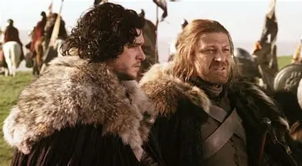

Across the 8 Seasons of GOT © 2011, and the many books I have not read but know tidbits from, there is an expansive system of beliefs, morals, hierarchies, religons, and personality types. From your typical nice guys (Pod the Man), to the most insidious characters you can't wait to see be killed off (Joffrey), GOT has it all and more.
Watching this beautiful mastercraft of a show is like watching the most intense season of survivor and never knowing who will be the next to go. Anytime you start to feel connected to a character, you know it's likely not long until they are no more. But the emotionl roller coaster is what, in my opinion makes it such an enjoyable watch. You see such a display of character archetypes at work and you begin to wonder if you ever understood where this story was about to take you. By the end you're exhausted and defeated and even if it ended in your favor you can't help but feel like you still lost in some ways.
Based on traits that are admirable and can be respected in almost all scenarios, it makes it slightly hard to chose. With a few coming immediatley to mind and others having to weigh out and think about. That being said:
.webp)